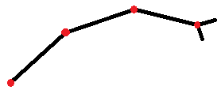

Vemachia sapiens ("smart wasp warrior"), V. sapiens, or Vemas are a species of humanoid wasps who share similar DNA to the warrior wasps found on Earth.
Vemas have 2 black antennae that they use to sense pheremones and smell, some balance, temperature, sound, and especially airflow.
They have a strong awareness of their environment and the things that move in it--an evolutionary trait originally used for hunting for food.
A Vemas's eyesight quality is very low, often showing blobs on their own, but their brains improve this quality with information from their antennae.
In the daylight, Vemas can see between 300-480 nm of light, but at night, they can see between 600-800 nm.
This is due to a liquid compound located in their eyes that contains proteins which bond with their cone cells.
When cooled, this compound solidifies, keeping the proteins from bonding and shifting their vision.
Vemas have a proboscis to eat and speak. This is normally retracted,
but muscles in the back of the mouth tighten to act like a tongue that can stick out,
and right in front of those muscles are another set of muscles for shaping the proboscis when speaking.
They also have mandibles that they can use to break down foods and create percussive sounds.
Arms
Vemas have 2 longer upper arms and 2 shorter lower arms, all of which have 4 joints for moving the whole arm, the rear arm, the forearm, and the wrist. They also have pincers for hands that they can use for limited grabbing, but it's more likely that they'll use multiple arms to grab instead.

Vemas have a large array of spiracles on the sides of their enlarged chests with which they breath through using a diaphragm. This air is delivered to air sacs and through trachea that deliver oxygen directly to flight muscles that are rich in myoglobin, as well as hemoglobin. A main heart circulates blood through the body, with a smaller accessory pump near the wing muscles. Vemas have 2 wings that attach to the back center of their thorax.
Abdomen Legs